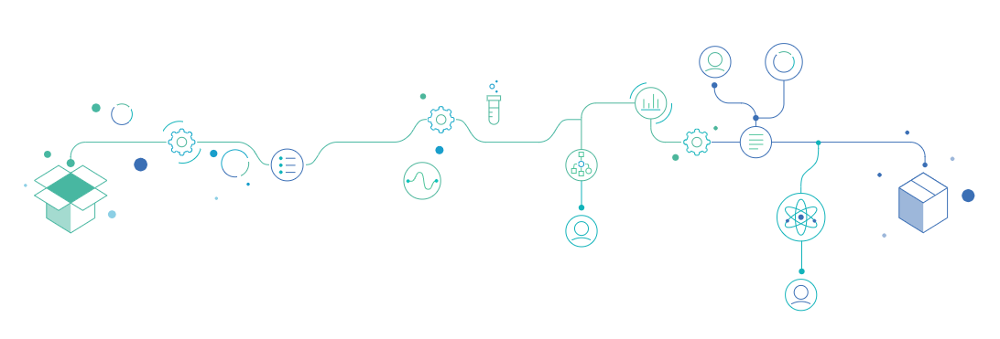

Example to use Rohub from Jupyter notebook
Contents
Example to use Rohub from Jupyter notebook¶
Install library if not present¶
pip install rohub
Requirement already satisfied: rohub in /opt/conda/lib/python3.8/site-packages (1.0.2)
Requirement already satisfied: requests in /opt/conda/lib/python3.8/site-packages (from rohub) (2.25.1)
Requirement already satisfied: pandas in /opt/conda/lib/python3.8/site-packages (from rohub) (1.2.4)
Requirement already satisfied: python-dateutil>=2.7.3 in /opt/conda/lib/python3.8/site-packages (from pandas->rohub) (2.8.1)
Requirement already satisfied: pytz>=2017.3 in /opt/conda/lib/python3.8/site-packages (from pandas->rohub) (2021.1)
Requirement already satisfied: numpy>=1.16.5 in /opt/conda/lib/python3.8/site-packages (from pandas->rohub) (1.19.5)
Requirement already satisfied: six>=1.5 in /opt/conda/lib/python3.8/site-packages (from python-dateutil>=2.7.3->pandas->rohub) (1.15.0)
Requirement already satisfied: urllib3<1.27,>=1.21.1 in /opt/conda/lib/python3.8/site-packages (from requests->rohub) (1.26.4)
Requirement already satisfied: idna<3,>=2.5 in /opt/conda/lib/python3.8/site-packages (from requests->rohub) (2.10)
Requirement already satisfied: certifi>=2017.4.17 in /opt/conda/lib/python3.8/site-packages (from requests->rohub) (2021.10.8)
Requirement already satisfied: chardet<5,>=3.0.2 in /opt/conda/lib/python3.8/site-packages (from requests->rohub) (4.0.0)
Note: you may need to restart the kernel to use updated packages.
Import library¶
import rohub
Authenticate¶
you need to create two files in /home/jovyan
rohub-user: contains your rohub username
rohub-pwd: add your password in this file
rohub_user = open("/home/jovyan/rohub-user").read().rstrip()
rohub_pwd = open("/home/jovyan/rohub-pwd").read().rstrip()
rohub.login(username=rohub_user, password=rohub_pwd)
#rohub_client_id = open("/home/jovyan/rohub-client_id").read().rstrip()
#rohub_client_secret = open("/home/jovyan/rohub-client_secret").read().rstrip()
#rohub.login(client_id=rohub_client_id, client_secret=rohub_client_secret)
Logged successfully as annefou@geo.uio.no.
RO methods¶
Create new RO¶
ro_title="8th December - Copernicus Atmosphere Monitoring Service Data Cube Research Object"
ro_research_areas=["Earth sciences"]
ro_description="This Research Object demonstrate how to compute monthly map of PM10 over your country"
ro_ros_type="Data-centric Research Object"
ro = rohub.ros_create(title=ro_title, research_areas=ro_research_areas, description=ro_description, ros_type=ro_ros_type, use_template=True)
Research Object was successfully created with id = 08d413f9-e434-4d50-a7ee-39b034f40ae0
Find ROs¶
rohub.ros_find(search="December")
| identifier | title | description | type | research_areas | status | created_on | created_by | modified_on | access_mode | owner | shared_link | |
|---|---|---|---|---|---|---|---|---|---|---|---|---|
| 0 | 08d413f9-e434-4d50-a7ee-39b034f40ae0 | 8th December - Copernicus Atmosphere Monitorin... | This Research Object demonstrate how to comput... | Data-centric Research Object | [Earth sciences] | LIVE | 2022-01-23T11:25:52.956418+00:00 | annefou@geo.uio.no | 2022-01-23T11:25:53.472305+00:00 | PUBLIC | annefou@geo.uio.no | https://w3id.org/ro-id/08d413f9-e434-4d50-a7ee... |
| 1 | 629b2be8-2457-44e9-bf8f-8aaba3fde6a8 | Changes in black carbon emissions over Europe ... | Following the emergence of the severe acute re... | Bibliography-centric Research Object | [Ecology, Meteorology] | LIVE | 2021-12-10T09:59:37.625454+00:00 | service-account-generation-service | 2021-12-10T09:59:38.215213+00:00 | PUBLIC | service-account-generation-service | https://w3id.org/ro-id/629b2be8-2457-44e9-bf8f... |
| 2 | 6440c36b-44c8-48c5-9a2a-a3c47de70c8a | Copernicus Atmosphere Monitoring Service Data ... | This Research Object demonstrate how to comput... | Data-centric Research Object | [Earth sciences] | SNAPSHOT | 2021-12-09T15:24:35.287031+00:00 | rpalma@man.poznan.pl | 2021-12-09T15:24:46.466543+00:00 | PUBLIC | rpalma@man.poznan.pl | https://w3id.org/ro-id/6440c36b-44c8-48c5-9a2a... |
| 3 | 57cf76e1-2179-4650-b48b-b5990dca86c1 | Copernicus Atmosphere Monitoring Service Data ... | This Research Object demonstrate how to comput... | Data-centric Research Object | [Earth sciences] | SNAPSHOT | 2021-12-09T15:20:19.561661+00:00 | rpalma@man.poznan.pl | 2021-12-09T15:20:30.133737+00:00 | PUBLIC | rpalma@man.poznan.pl | https://w3id.org/ro-id/57cf76e1-2179-4650-b48b... |
| 4 | a08ddcb2-ae5f-40ba-b1b6-c64dd2e4d68c | Copernicus Atmosphere Monitoring Service Data ... | This Research Object demonstrate how to comput... | Data-centric Research Object | [Earth sciences] | SNAPSHOT | 2021-12-09T15:19:07.190287+00:00 | rpalma@man.poznan.pl | 2021-12-09T15:19:24.584005+00:00 | PUBLIC | rpalma@man.poznan.pl | https://w3id.org/ro-id/a08ddcb2-ae5f-40ba-b1b6... |
| 5 | c737f695-6715-4916-8bef-8fc0ce879760 | Copernicus Atmosphere Monitoring Service Data ... | This Research Object demonstrate how to comput... | Data-centric Research Object | [Earth sciences] | SNAPSHOT | 2021-12-08T22:04:42.703330+00:00 | rpalma@man.poznan.pl | 2021-12-08T22:05:13.391015+00:00 | PUBLIC | rpalma@man.poznan.pl | https://w3id.org/ro-id/c737f695-6715-4916-8bef... |
| 6 | abebc0e7-87b6-4ed5-8a0e-9b71dc30e333 | Copernicus Atmosphere Monitoring Service Data ... | This Research Object demonstrate how to comput... | Data-centric Research Object | [Earth sciences] | SNAPSHOT | 2021-12-08T22:01:17.734019+00:00 | rpalma@man.poznan.pl | 2021-12-08T22:01:44.739807+00:00 | PUBLIC | rpalma@man.poznan.pl | https://w3id.org/ro-id/abebc0e7-87b6-4ed5-8a0e... |
List my ROs¶
myros=rohub.list_my_ros()
myros[0:10]
| identifier | title | description | type | research_areas | status | created_on | created_by | modified_on | access_mode | owner | shared_link | |
|---|---|---|---|---|---|---|---|---|---|---|---|---|
| 0 | 08d413f9-e434-4d50-a7ee-39b034f40ae0 | 8th December - Copernicus Atmosphere Monitorin... | This Research Object demonstrate how to comput... | Data-centric Research Object | [Earth sciences] | LIVE | 2022-01-23T11:25:52.956418+00:00 | annefou@geo.uio.no | 2022-01-23T11:25:53.472305+00:00 | PUBLIC | annefou@geo.uio.no | https://w3id.org/ro-id/08d413f9-e434-4d50-a7ee... |
| 1 | 03961876-c21f-4384-966e-1413adf58477 | Jupyter notebook demonstrating the usage of CA... | This Research Object demonstrates how to use C... | Executable Research Object | [Earth sciences] | SNAPSHOT | 2022-01-18T19:06:48.630028+00:00 | annefou@geo.uio.no | 2022-01-18T19:06:57.061094+00:00 | PUBLIC | annefou@geo.uio.no | https://w3id.org/ro-id/03961876-c21f-4384-966e... |
| 2 | 0d5a0619-14d5-4b45-b925-a9432684f76a | Jupyter notebook demonstrating the usage of CA... | This Research Object demonstrates how to use C... | Executable Research Object | [Earth sciences] | SNAPSHOT | 2022-01-18T18:30:54.174269+00:00 | annefou@geo.uio.no | 2022-01-18T18:31:03.342744+00:00 | PUBLIC | annefou@geo.uio.no | https://w3id.org/ro-id/0d5a0619-14d5-4b45-b925... |
| 3 | d767e6c3-6cfd-4e68-a989-0b4cbe9236b5 | Identification of sources of pollution events ... | Trajectory model (backwards) such as FLEXPART ... | Executable Research Object | [Applied sciences, Meteorology] | LIVE | 2021-12-20T11:33:30.052359+00:00 | annefou@geo.uio.no | 2021-12-20T11:33:30.812716+00:00 | PUBLIC | annefou@geo.uio.no | https://w3id.org/ro-id/d767e6c3-6cfd-4e68-a989... |
| 4 | 5f2e7ab8-8122-41b3-8d53-060e09855fa7 | Jupyter notebook comparing CAMS and air qualit... | Compare CAMS analysis with available observati... | Executable Research Object | [Applied sciences, Meteorology] | LIVE | 2021-12-20T11:28:59.678934+00:00 | annefou@geo.uio.no | 2021-12-20T11:29:00.402870+00:00 | PUBLIC | annefou@geo.uio.no | https://w3id.org/ro-id/5f2e7ab8-8122-41b3-8d53... |
| 5 | 53aa90bf-c593-4e6d-923f-d4711ac4b0e1 | Impact of the Covid-19 Lockdown on Air quality... | The COVID-19 pandemic has led to significant r... | Executable Research Object | [Applied sciences, Meteorology] | LIVE | 2021-12-19T21:18:33.231894+00:00 | annefou@geo.uio.no | 2021-12-19T21:18:33.990652+00:00 | PUBLIC | annefou@geo.uio.no | https://w3id.org/ro-id/53aa90bf-c593-4e6d-923f... |
Load RO¶
ro_id=myros.loc[0,"identifier"]
ro=rohub.ros_load(identifier=ro_id)
Research Object was successfully loaded with id = 08d413f9-e434-4d50-a7ee-39b034f40ae0
Show basic metadata¶
ro.show_metadata()
{'identifier': '08d413f9-e434-4d50-a7ee-39b034f40ae0',
'shared_link': 'https://w3id.org/ro-id/08d413f9-e434-4d50-a7ee-39b034f40ae0',
'title': '8th December - Copernicus Atmosphere Monitoring Service Data Cube Research Object',
'description': 'This Research Object demonstrate how to compute monthly map of PM10 over your country',
'status': 'LIVE',
'access_mode': 'PUBLIC',
'type': 'Data-centric Research Object',
'template': 'Data Centric Research Object folders structure',
'created': '2022-01-23T11:25:52.956418Z',
'creator': 'annefou@geo.uio.no',
'modificator': None,
'modified': '2022-01-23T11:25:53.139282Z',
'importer': None,
'research_areas': ['Earth sciences'],
'owner': 'annefou@geo.uio.no',
'editors': [],
'readers': [],
'rating': '0.00',
'number_of_ratings': 0,
'number_of_likes': 0,
'number_of_dislikes': 0,
'quality': 0,
'size': 0,
'creation_mode': 'MANUAL',
'doi': None,
'api_link': 'https://api.rohub.org/api/ros/08d413f9-e434-4d50-a7ee-39b034f40ae0/'}
Add/modify basic metadata¶
ro.description="This Research Object demonstrate how to compute monthly map of PM10 over your country - modified"
ro.editors=["annefou@geo.uio.no", "dario.stelitano@ingv.it"]
ro.update()
{'identifier': '08d413f9-e434-4d50-a7ee-39b034f40ae0',
'shared_link': 'https://w3id.org/ro-id/08d413f9-e434-4d50-a7ee-39b034f40ae0',
'title': '8th December - Copernicus Atmosphere Monitoring Service Data Cube Research Object',
'description': 'This Research Object demonstrate how to compute monthly map of PM10 over your country - modified',
'status': 'LIVE',
'access_mode': 'PUBLIC',
'type': 'Data-centric Research Object',
'template': 'Data Centric Research Object folders structure',
'created': '2022-01-23T11:25:52.956418Z',
'creator': 'annefou@geo.uio.no',
'modificator': 'annefou@geo.uio.no',
'modified': '2022-01-23T11:26:18.302214Z',
'importer': None,
'research_areas': ['Earth sciences'],
'owner': 'annefou@geo.uio.no',
'editors': ['annefou@geo.uio.no', 'dario.stelitano@ingv.it'],
'readers': [],
'rating': '0.00',
'number_of_ratings': 0,
'number_of_likes': 0,
'number_of_dislikes': 0,
'quality': 0,
'size': 0,
'creation_mode': 'MANUAL',
'doi': None,
'api_link': 'https://api.rohub.org/api/ros/08d413f9-e434-4d50-a7ee-39b034f40ae0/'}
List RO Folders¶
myfolders = ro.list_folders()
myfolders
| identifier | name | description | creator | created_on | modified_on | path | |
|---|---|---|---|---|---|---|---|
| 0 | f189a6b8-c273-4ba2-bc76-4abbdb0aa36f | biblio | None | annefou@geo.uio.no | 2022-01-23T11:25:53.961646+0000 | 2022-01-23T11:25:53.963704+0000 | biblio |
| 1 | afd2f5c3-d1f5-4ba5-ace2-e6a033520c91 | data | None | annefou@geo.uio.no | 2022-01-23T11:25:53.961987+0000 | 2022-01-23T11:25:53.963847+0000 | data |
| 2 | 7fe6b63e-2635-47f9-b75f-e93c80a1cee0 | metadata | None | annefou@geo.uio.no | 2022-01-23T11:25:53.962242+0000 | 2022-01-23T11:25:53.964010+0000 | metadata |
| 3 | c4460626-996b-48db-81f6-b98c0bf90904 | raw data | None | annefou@geo.uio.no | 2022-01-23T11:25:53.962473+0000 | 2022-01-23T11:25:53.964195+0000 | raw data |
Aggregate resource (internal)¶
resi_res_type="Sketch"
resi_file_path="flow-dcro.png"
resi_title="Flow to compute monthly map"
resi_folder=myfolders.loc[0,"identifier"]
my_res_int0=ro.add_internal_resource(res_type=resi_res_type,file_path=resi_file_path, title=resi_title, folder=resi_folder)
Resource was successfully created with id = be4c5800-9058-4d43-967c-1b233da92d17
Aggregate resouce (external)¶
rese_res_type="Data Cube Collection"
rese_file_url="https://reliance-das.adamplatform.eu/opensearch/datasets?datasetId=EU_CAMS_SURFACE_PM10_G"
rese_title="EU_CAMS_SURFACE_PM10_G"
rese_description="This dataset provides daily air quality analyses and forecasts for Europe.\n\nCAMS produces specific daily air quality analyses and forecasts for the European domain at significantly higher spatial resolution (0.1 degrees, approx. 10km) than is available from the global analyses and forecasts. The production is based on an ensemble of nine air quality forecasting systems across Europe. A median ensemble is calculated from individual outputs, since ensemble products yield on average better performance than the individual model products. The spread between the nine models are used to provide an estimate of the forecast uncertainty. The analysis combines model data with observations provided by the European Environment Agency (EEA) into a complete and consistent dataset using various data assimilation techniques depending upon the air-quality forecasting system used. In parallel, air quality forecasts are produced once a day for the next four days. Both the analysis and the forecast are available at hourly time steps at seven height levels.\n\nNote that only nitrogen monoxide, nitrogen dioxide, sulphur dioxide, ozone, PM2.5, PM10 and dust are regularly validated against in situ observations, and therefore forecasts of all other variables are unvalidated and should be considered experimental."
ro.add_external_resource(res_type=rese_res_type, input_url=rese_file_url, title=rese_title, description= rese_description)
Resource was successfully created with id = 37598c0b-952e-45d9-8cdf-d306fc98230a
Resource(identifier=37598c0b-952e-45d9-8cdf-d306fc98230a, post_request=False)
rese_res_type="Result"
rese_file_url="https://reliance-das.adamplatform.eu/wcs?service=WCS&Request=GetCoverage&CoverageID=EU_CAMS_SURFACE_PM10_G&subset=unix(2018-09-01,2018-09-01)&format=image/tiff"
rese_title="Daily PM10 concentration"
rese_description="Daily PM10 concentration for 1st September 2018 over Europe"
ro.add_external_resource(res_type=rese_res_type, input_url=rese_file_url, title=rese_title, description= rese_description)
Resource was successfully created with id = 8e0adfcf-57d5-4c55-9185-dc7a3b1b7e41
Resource(identifier=8e0adfcf-57d5-4c55-9185-dc7a3b1b7e41, post_request=False)
rese_res_type="Data Cube Product"
rese_file_url="https://reliance-das.adamplatform.eu/opensearch/search?datasetId=EU_CAMS_SURFACE_PM10_G&startDate=2018-09-01&endDate=2018-09-01"
rese_title="Index of daily PM10 concentration for September 1st 2018"
rese_description="List of hourly PM10 concentration data for September 1st 2018 over Europe"
ro.add_external_resource(res_type=rese_res_type, input_url=rese_file_url, title=rese_title, description=rese_description)
Resource was successfully created with id = deba9c23-b217-48db-a38a-6d766751919f
Resource(identifier=deba9c23-b217-48db-a38a-6d766751919f, post_request=False)
rese_res_type="Jupyter Notebook"
rese_file_url="https://zenodo.org/record/5554786#.YYlWo9nMI-Q"
rese_title="Jupter Notebook of CAMS European air quality analysis from Copernicus Atmosphere Monitoring with RELIANCE services"
rese_description="Jupyter Notebook for discovering, accessing and processing RELIANCE data cube, and creating a Research Object with results, and finally publish it in Zenodo"
my_res_ext0=ro.add_external_resource(res_type=rese_res_type, input_url=rese_file_url, title=rese_title, description=rese_description)
Resource was successfully created with id = d4642d82-a03a-497b-98cf-9339cffcb09a
rese_res_type="Dataset"
rese_file_url="https://box.psnc.pl/f/d90a0e1e0d/?raw=1"
rese_title="Catch data from Norway"
rese_description="Catch data records sample from 2019"
my_res_ext1=ro.add_external_resource(res_type=rese_res_type, input_url=rese_file_url, title=rese_title, description=rese_description)
Resource was successfully created with id = 1a23e779-20c8-4a49-bf1d-33a44b07bb1b
List RO resources¶
ro.list_resources()
| identifier | type | source | title | description | url | name | path | size | creator | created_on | modified_on | download_url | |
|---|---|---|---|---|---|---|---|---|---|---|---|---|---|
| 0 | 1a23e779-20c8-4a49-bf1d-33a44b07bb1b | Dataset | external | Catch data from Norway | Catch data records sample from 2019 | https://box.psnc.pl/f/d90a0e1e0d/?raw=1 | Catch data from Norway | https://box.psnc.pl/f/d90a0e1e0d/?raw=1 | NaN | annefou@geo.uio.no | 2022-01-23T11:26:45.692570+0000 | 2022-01-23T11:26:45.693196+0000 | https://box.psnc.pl/f/d90a0e1e0d/?raw=1 |
| 1 | 37598c0b-952e-45d9-8cdf-d306fc98230a | Data Cube Collection | external | EU_CAMS_SURFACE_PM10_G | This dataset provides daily air quality analys... | https://reliance-das.adamplatform.eu/opensearc... | EU_CAMS_SURFACE_PM10_G | https://reliance-das.adamplatform.eu/opensearc... | NaN | annefou@geo.uio.no | 2022-01-23T11:26:34.948551+0000 | 2022-01-23T11:26:34.949461+0000 | https://reliance-das.adamplatform.eu/opensearc... |
| 2 | deba9c23-b217-48db-a38a-6d766751919f | Data Cube Product | external | Index of daily PM10 concentration for Septembe... | List of hourly PM10 concentration data for Sep... | https://reliance-das.adamplatform.eu/opensearc... | Index of daily PM10 concentration for Septembe... | https://reliance-das.adamplatform.eu/opensearc... | NaN | annefou@geo.uio.no | 2022-01-23T11:26:41.805590+0000 | 2022-01-23T11:26:41.806154+0000 | https://reliance-das.adamplatform.eu/opensearc... |
| 3 | 8e0adfcf-57d5-4c55-9185-dc7a3b1b7e41 | Result | external | Daily PM10 concentration | Daily PM10 concentration for 1st September 201... | https://reliance-das.adamplatform.eu/wcs?servi... | Daily PM10 concentration | https://reliance-das.adamplatform.eu/wcs?servi... | NaN | annefou@geo.uio.no | 2022-01-23T11:26:39.261026+0000 | 2022-01-23T11:26:39.261828+0000 | https://reliance-das.adamplatform.eu/wcs?servi... |
| 4 | d4642d82-a03a-497b-98cf-9339cffcb09a | Jupyter Notebook | external | Jupter Notebook of CAMS European air quality a... | Jupyter Notebook for discovering, accessing an... | https://zenodo.org/record/5554786#.YYlWo9nMI-Q | Jupter Notebook of CAMS European air quality a... | https://zenodo.org/record/5554786#.YYlWo9nMI-Q | NaN | annefou@geo.uio.no | 2022-01-23T11:26:43.290547+0000 | 2022-01-23T11:26:43.291617+0000 | https://zenodo.org/record/5554786#.YYlWo9nMI-Q |
| 5 | be4c5800-9058-4d43-967c-1b233da92d17 | Sketch | internal | Flow to compute monthly map | None | None | Flow to compute monthly map | biblio/flow-dcro.png | 73394.0 | annefou@geo.uio.no | 2022-01-23T11:26:29.793829+0000 | 2022-01-23T11:26:29.794852+0000 | https://api.rohub.org/api/resources/be4c5800-9... |
Add geolocation¶
You can add a geojson ld file or directly its content here
ro.add_geolocation(body_specification_json="/home/jovyan/ROHub-API/files/EuropeBOX.geojson")
ro.add_geolocation(body_specification_json="/home/jovyan/ROHub-API/files/fra.geo-ld.json")
ro.add_geolocation(body_specification_json="/home/jovyan/ROHub-API/files/geojson-test-simple_mp.json")
In the example below, we direcly add the content (one single location)
geojson_as_text_point_python= {
"@context": {
"geojson": "https://purl.org/geojson/vocab#"
},
"type": "Feature",
"geometry": {
"type": "Point",
"coordinates": [ 38.0, 38.0 ]
}
}
ro.add_geolocation(body_specification_json=geojson_as_text_point_python)
{'identifier': '7681649b-adf0-4b15-a5f3-8f6c88230347',
'shared_link': 'https://w3id.org/ro-id/08d413f9-e434-4d50-a7ee-39b034f40ae0/annotations/7681649b-adf0-4b15-a5f3-8f6c88230347',
'name': 'annotations/7681649b-adf0-4b15-a5f3-8f6c88230347',
'filename': '.ro/annotations/7681649b-adf0-4b15-a5f3-8f6c88230347.ttl',
'relation': False,
'read_only': False,
'target': '08d413f9-e434-4d50-a7ee-39b034f40ae0',
'ro': '08d413f9-e434-4d50-a7ee-39b034f40ae0',
'resources': [],
'created': '2022-01-23T11:26:54.788958+0000',
'creator': 'annefou@geo.uio.no',
'modificator': None,
'modified': '2022-01-23T11:26:54.788837+0000',
'authors_credits': ['annefou@geo.uio.no'],
'contributors_credits': [],
'api_link': 'https://api.rohub.org/api/annotations/7681649b-adf0-4b15-a5f3-8f6c88230347/'}
Export to RO-crate¶
#ro.export_to_rocrate(filename="my-ro-crate")
ro.export_to_rocrate(filename="my-ro-crate", use_format="zip")
File was successfully downloaded.
Add authors/contributors/publishers/copyrightHolders¶
List users¶
usernames=rohub.users_find(search="Anne")
usernames
| identifier | username | display_name | affiliation | description | areas_of_interest | orcid_identifier | external | |
|---|---|---|---|---|---|---|---|---|
| 0 | 62277187-0f2e-4320-a6b0-7fe467f1b1c1 | annefou@geo.uio.no | Anne Fouilloux | Nordic e-Infrastructure Collaboration (NeIC) | Research Software Engineer | Weather and Climate Science | 0000-0002-1784-2920 | False |
user_id_anne=usernames.loc[0,"username"]
user_id_anne
'annefou@geo.uio.no'
usernames=rohub.users_find(search="Nieves")
usernames
| identifier | username | display_name | affiliation | orcid_identifier | external | |
|---|---|---|---|---|---|---|
| 0 | c62bf5a8-72ff-45e3-a92a-7ba9f5a06e0e | https://orcid.org/0000-0003-3784-6651 | Nieves Pepito | UNO-Recoletos | 0000-0003-3784-6651 | True |
user_id_nieves=usernames.loc[0,"username"]
user_id_nieves
'https://orcid.org/0000-0003-3784-6651'
Add authors/contributors¶
ro.set_authors(agents=[user_id_anne,user_id_nieves])
#ro.set_authors(agents=["dontdoit@lochness.uk"])
Agent: annefou@geo.uio.no recognized in the system.
Agent: https://orcid.org/0000-0003-3784-6651 recognized in the system.
[{'identifier': '62277187-0f2e-4320-a6b0-7fe467f1b1c1',
'username': 'annefou@geo.uio.no',
'name': 'annefou@geo.uio.no',
'type': 'RohubUser',
'display_name': 'Anne Fouilloux',
'orcid_identifier': '0000-0002-1784-2920',
'affiliation': 'Nordic e-Infrastructure Collaboration (NeIC)'},
{'identifier': 'c62bf5a8-72ff-45e3-a92a-7ba9f5a06e0e',
'username': 'https://orcid.org/0000-0003-3784-6651',
'name': 'https://orcid.org/0000-0003-3784-6651',
'type': 'ExternalUser',
'display_name': 'Nieves Pepito',
'orcid_identifier': '0000-0003-3784-6651',
'affiliation': 'UNO-Recoletos'}]
ro.set_contributors(agents=[{"user_id":"rapnonexist_3@hotmail.com",
"display_name": "Pepito Bato",
"email":"example3@hotmail.com",
"orcid_id":"0000-0002-8316-3192",
"affiliation": "PCSS"}])
Agent: {'user_id': 'rapnonexist_3@hotmail.com', 'display_name': 'Pepito Bato', 'email': 'example3@hotmail.com', 'orcid_id': '0000-0002-8316-3192', 'affiliation': 'PCSS'} recognized in the system.
[{'identifier': 'b1acadbf-fdfa-49c3-b9e2-86d1ae6a93c3',
'username': 'https://orcid.org/0000-0002-8316-3192',
'name': 'https://orcid.org/0000-0002-8316-3192',
'type': 'ExternalUser',
'display_name': 'Pepito Bato',
'orcid_identifier': '0000-0002-8316-3192',
'affiliation': 'PCSS'}]
List organizations¶
organizations=rohub.organizations_find(search="poznan")
organizations
| identifier | organization_id | display_name | url | ror_identifier | ||
|---|---|---|---|---|---|---|
| 0 | 64ec5402-1171-42f6-b9dd-6fa901ca9724 | https://ror.org/025cj6e44 | Poznan Supercomputing and Networking Center | office@man.poznan.pl | https://www.psnc.pl/ | 025cj6e44 |
Add publisher/copyright holder¶
ro.set_publishers(agents=[organizations.loc[0,"organization_id"]])
Agent: https://ror.org/025cj6e44 recognized in the system.
[{'identifier': '64ec5402-1171-42f6-b9dd-6fa901ca9724',
'username': 'https://ror.org/025cj6e44',
'name': 'https://ror.org/025cj6e44',
'type': 'Organization',
'display_name': 'Poznan Supercomputing and Networking Center'}]
ro.set_copyright_holders(agents=[{"org_id":"https://neic.no/",
"display_name": "Nordic e-Infrastructure Collaboration",
"agent_type": "organization",
"ror_identifier":"04jcwf484",
"organization_url": "https://neic.no/"}])
Agent: {'org_id': 'https://neic.no/', 'display_name': 'Nordic e-Infrastructure Collaboration', 'agent_type': 'organization', 'ror_identifier': '04jcwf484', 'organization_url': 'https://neic.no/'} recognized in the system.
[{'identifier': 'fbd9bdcf-4a1d-4ae8-9a90-6b9ec5a3b8b2',
'username': 'https://ror.org/04jcwf484',
'name': 'https://ror.org/04jcwf484',
'type': 'Organization',
'display_name': 'Nordic e-Infrastructure Collaboration'}]
Add RO license¶
list available pre-defined licenses¶
rohub.list_available_licenses()
['0BSD',
'AAL',
'ADSL',
'AFL-1.1',
'AFL-1.2',
'AFL-2.0',
'AFL-2.1',
'AFL-3.0',
'AGPL-1.0',
'AGPL-1.0-only',
'AGPL-1.0-or-later',
'AGPL-3.0',
'AGPL-3.0-only',
'AGPL-3.0-or-later',
'AMDPLPA',
'AML',
'AMPAS',
'ANTLR-PD',
'ANTLR-PD-fallback',
'APAFML',
'APL-1.0',
'APSL-1.0',
'APSL-1.1',
'APSL-1.2',
'APSL-2.0',
'Abstyles',
'Adobe-2006',
'Adobe-Glyph',
'Afmparse',
'Against-DRM',
'Aladdin',
'Apache-1.0',
'Apache-1.1',
'Apache-2.0',
'Artistic-1.0',
'Artistic-1.0-Perl',
'Artistic-1.0-cl8',
'Artistic-2.0',
'BSD-1-Clause',
'BSD-2-Clause',
'BSD-2-Clause-FreeBSD',
'BSD-2-Clause-NetBSD',
'BSD-2-Clause-Patent',
'BSD-2-Clause-Views',
'BSD-3-Clause',
'BSD-3-Clause-Attribution',
'BSD-3-Clause-Clear',
'BSD-3-Clause-LBNL',
'BSD-3-Clause-Modification',
'BSD-3-Clause-No-Military-License',
'BSD-3-Clause-No-Nuclear-License',
'BSD-3-Clause-No-Nuclear-License-2014',
'BSD-3-Clause-No-Nuclear-Warranty',
'BSD-3-Clause-Open-MPI',
'BSD-4-Clause',
'BSD-4-Clause-Shortened',
'BSD-4-Clause-UC',
'BSD-Protection',
'BSD-Source-Code',
'BSL-1.0',
'BUSL-1.1',
'Bahyph',
'Barr',
'Beerware',
'BitTorrent-1.0',
'BitTorrent-1.1',
'BlueOak-1.0.0',
'Borceux',
'C-UDA-1.0',
'CAL-1.0',
'CAL-1.0-Combined-Work-Exception',
'CATOSL-1.1',
'CC-BY-1.0',
'CC-BY-2.0',
'CC-BY-2.5',
'CC-BY-2.5-AU',
'CC-BY-3.0',
'CC-BY-3.0-AT',
'CC-BY-3.0-DE',
'CC-BY-3.0-NL',
'CC-BY-3.0-US',
'CC-BY-4.0',
'CC-BY-NC-1.0',
'CC-BY-NC-2.0',
'CC-BY-NC-2.5',
'CC-BY-NC-3.0',
'CC-BY-NC-3.0-DE',
'CC-BY-NC-4.0',
'CC-BY-NC-ND-1.0',
'CC-BY-NC-ND-2.0',
'CC-BY-NC-ND-2.5',
'CC-BY-NC-ND-3.0',
'CC-BY-NC-ND-3.0-DE',
'CC-BY-NC-ND-3.0-IGO',
'CC-BY-NC-ND-4.0',
'CC-BY-NC-SA-1.0',
'CC-BY-NC-SA-2.0',
'CC-BY-NC-SA-2.0-FR',
'CC-BY-NC-SA-2.0-UK',
'CC-BY-NC-SA-2.5',
'CC-BY-NC-SA-3.0',
'CC-BY-NC-SA-3.0-DE',
'CC-BY-NC-SA-3.0-IGO',
'CC-BY-NC-SA-4.0',
'CC-BY-ND-1.0',
'CC-BY-ND-2.0',
'CC-BY-ND-2.5',
'CC-BY-ND-3.0',
'CC-BY-ND-3.0-DE',
'CC-BY-ND-4.0',
'CC-BY-SA-1.0',
'CC-BY-SA-2.0',
'CC-BY-SA-2.0-UK',
'CC-BY-SA-2.1-JP',
'CC-BY-SA-2.5',
'CC-BY-SA-3.0',
'CC-BY-SA-3.0-AT',
'CC-BY-SA-3.0-DE',
'CC-BY-SA-4.0',
'CC-PDDC',
'CC0-1.0',
'CDDL-1.0',
'CDDL-1.1',
'CDL-1.0',
'CDLA-Permissive-1.0',
'CDLA-Permissive-2.0',
'CDLA-Sharing-1.0',
'CECILL-1.0',
'CECILL-1.1',
'CECILL-2.0',
'CECILL-2.1',
'CECILL-B',
'CECILL-C',
'CERN-OHL-1.1',
'CERN-OHL-1.2',
'CERN-OHL-P-2.0',
'CERN-OHL-S-2.0',
'CERN-OHL-W-2.0',
'CNRI-Jython',
'CNRI-Python',
'CNRI-Python-GPL-Compatible',
'CPAL-1.0',
'CPL-1.0',
'CPOL-1.02',
'CUA-OPL-1.0',
'Caldera',
'ClArtistic',
'Condor-1.1',
'Crossword',
'CrystalStacker',
'Cube',
'D-FSL-1.0',
'DOC',
'DRL-1.0',
'DSDP',
'DSL',
'Dotseqn',
'ECL-1.0',
'ECL-2.0',
'EFL-1.0',
'EFL-2.0',
'EPICS',
'EPL-1.0',
'EPL-2.0',
'EUDatagrid',
'EUPL-1.0',
'EUPL-1.1',
'EUPL-1.2',
'Entessa',
'ErlPL-1.1',
'Eurosym',
'FAL-1.3',
'FSFAP',
'FSFUL',
'FSFULLR',
'FTL',
'Fair',
'Frameworx-1.0',
'FreeBSD-DOC',
'FreeImage',
'GD',
'GFDL-1.1',
'GFDL-1.1-invariants-only',
'GFDL-1.1-invariants-or-later',
'GFDL-1.1-no-invariants-only',
'GFDL-1.1-no-invariants-or-later',
'GFDL-1.1-only',
'GFDL-1.1-or-later',
'GFDL-1.2',
'GFDL-1.2-invariants-only',
'GFDL-1.2-invariants-or-later',
'GFDL-1.2-no-invariants-only',
'GFDL-1.2-no-invariants-or-later',
'GFDL-1.2-only',
'GFDL-1.2-or-later',
'GFDL-1.3',
'GFDL-1.3-invariants-only',
'GFDL-1.3-invariants-or-later',
'GFDL-1.3-no-cover-texts-no-invariant-sections',
'GFDL-1.3-no-invariants-only',
'GFDL-1.3-no-invariants-or-later',
'GFDL-1.3-only',
'GFDL-1.3-or-later',
'GL2PS',
'GLWTPL',
'GPL-1.0',
'GPL-1.0+',
'GPL-1.0-only',
'GPL-1.0-or-later',
'GPL-2.0',
'GPL-2.0+',
'GPL-2.0-only',
'GPL-2.0-or-later',
'GPL-2.0-with-GCC-exception',
'GPL-2.0-with-autoconf-exception',
'GPL-2.0-with-bison-exception',
'GPL-2.0-with-classpath-exception',
'GPL-2.0-with-font-exception',
'GPL-3.0',
'GPL-3.0+',
'GPL-3.0-only',
'GPL-3.0-or-later',
'GPL-3.0-with-GCC-exception',
'GPL-3.0-with-autoconf-exception',
'Giftware',
'Glide',
'Glulxe',
'HPND',
'HPND-sell-variant',
'HTMLTIDY',
'HaskellReport',
'Hippocratic-2.1',
'IBM-pibs',
'ICU',
'IJG',
'IPA',
'IPL-1.0',
'ISC',
'ImageMagick',
'Imlib2',
'Info-ZIP',
'Intel',
'Intel-ACPI',
'Interbase-1.0',
'JPNIC',
'JSON',
'JasPer-2.0',
'LAL-1.2',
'LAL-1.3',
'LGPL-2.0',
'LGPL-2.0+',
'LGPL-2.0-only',
'LGPL-2.0-or-later',
'LGPL-2.1',
'LGPL-2.1+',
'LGPL-2.1-only',
'LGPL-2.1-or-later',
'LGPL-3.0',
'LGPL-3.0+',
'LGPL-3.0-only',
'LGPL-3.0-or-later',
'LGPLLR',
'LO-FR-2.0',
'LPL-1.0',
'LPL-1.02',
'LPPL-1.0',
'LPPL-1.1',
'LPPL-1.2',
'LPPL-1.3a',
'LPPL-1.3c',
'Latex2e',
'Leptonica',
'LiLiQ-P-1.1',
'LiLiQ-R-1.1',
'LiLiQ-Rplus-1.1',
'Libpng',
'Linux-OpenIB',
'MIT',
'MIT-0',
'MIT-CMU',
'MIT-Modern-Variant',
'MIT-advertising',
'MIT-enna',
'MIT-feh',
'MIT-open-group',
'MITNFA',
'MPL-1.0',
'MPL-1.1',
'MPL-2.0',
'MPL-2.0-no-copyleft-exception',
'MS-PL',
'MS-RL',
'MTLL',
'MakeIndex',
'MirOS',
'Motosoto',
'MulanPSL-1.0',
'MulanPSL-2.0',
'Multics',
'Mup',
'NAIST-2003',
'NASA-1.3',
'NBPL-1.0',
'NCGL-UK-2.0',
'NCSA',
'NGPL',
'NIST-PD',
'NIST-PD-fallback',
'NLOD-1.0',
'NLOD-2.0',
'NLPL',
'NOSL',
'NPL-1.0',
'NPL-1.1',
'NPOSL-3.0',
'NRL',
'NTP',
'NTP-0',
'Naumen',
'Net-SNMP',
'NetCDF',
'Newsletr',
'Nokia',
'Noweb',
'Nunit',
'O-UDA-1.0',
'OCCT-PL',
'OCLC-2.0',
'ODC-By-1.0',
'ODC-PDDL-1.0',
'ODbL-1.0',
'OFL-1.0',
'OFL-1.0-RFN',
'OFL-1.0-no-RFN',
'OFL-1.1',
'OFL-1.1-RFN',
'OFL-1.1-no-RFN',
'OGC-1.0',
'OGDL-Taiwan-1.0',
'OGL-Canada-2.0',
'OGL-UK-1.0',
'OGL-UK-2.0',
'OGL-UK-3.0',
'OGTSL',
'OLDAP-1.1',
'OLDAP-1.2',
'OLDAP-1.3',
'OLDAP-1.4',
'OLDAP-2.0',
'OLDAP-2.0.1',
'OLDAP-2.1',
'OLDAP-2.2',
'OLDAP-2.2.1',
'OLDAP-2.2.2',
'OLDAP-2.3',
'OLDAP-2.4',
'OLDAP-2.5',
'OLDAP-2.6',
'OLDAP-2.7',
'OLDAP-2.8',
'OML',
'OPL-1.0',
'OPUBL-1.0',
'OSET-PL-2.1',
'OSL-1.0',
'OSL-1.1',
'OSL-2.0',
'OSL-2.1',
'OSL-3.0',
'OpenSSL',
'PDDL-1.0',
'PHP-3.0',
'PHP-3.01',
'PSF-2.0',
'Parity-6.0.0',
'Parity-7.0.0',
'Plexus',
'PolyForm-Noncommercial-1.0.0',
'PolyForm-Small-Business-1.0.0',
'PostgreSQL',
'Python-2.0',
'QPL-1.0',
'Qhull',
'RHeCos-1.1',
'RPL-1.1',
'RPL-1.5',
'RPSL-1.0',
'RSA-MD',
'RSCPL',
'Rdisc',
'Ruby',
'SAX-PD',
'SCEA',
'SGI-B-1.0',
'SGI-B-1.1',
'SGI-B-2.0',
'SHL-0.5',
'SHL-0.51',
'SISSL',
'SISSL-1.2',
'SMLNJ',
'SMPPL',
'SNIA',
'SPL-1.0',
'SSH-OpenSSH',
'SSH-short',
'SSPL-1.0',
'SWL',
'Saxpath',
'Sendmail',
'Sendmail-8.23',
'SimPL-2.0',
'Sleepycat',
'Spencer-86',
'Spencer-94',
'Spencer-99',
'StandardML-NJ',
'SugarCRM-1.1.3',
'TAPR-OHL-1.0',
'TCL',
'TCP-wrappers',
'TMate',
'TORQUE-1.1',
'TOSL',
'TU-Berlin-1.0',
'TU-Berlin-2.0',
'UCL-1.0',
'UPL-1.0',
'Unicode-DFS-2015',
'Unicode-DFS-2016',
'Unicode-TOU',
'Unlicense',
'VOSTROM',
'VSL-1.0',
'Vim',
'W3C',
'W3C-19980720',
'W3C-20150513',
'WTFPL',
'Watcom-1.0',
'Wsuipa',
'X11',
'XFree86-1.1',
'XSkat',
'Xerox',
'Xnet',
'YPL-1.0',
'YPL-1.1',
'ZPL-1.1',
'ZPL-2.0',
'ZPL-2.1',
'Zed',
'Zend-2.0',
'Zimbra-1.3',
'Zimbra-1.4',
'Zlib',
'acme-cc',
'blessing',
'bsd-license',
'bzip2-1.0.5',
'bzip2-1.0.6',
'canada-crown',
'cc-nc',
'copyleft-next-0.3.0',
'copyleft-next-0.3.1',
'curl',
'diffmark',
'dli-model-use',
'dvipdfm',
'eCos-2.0',
'eGenix',
'etalab-2.0',
'eurofound',
'gSOAP-1.3b',
'geo-no-fee-unrestricted',
'geogratis',
'gnuplot',
'hesa-withrights',
'iMatix',
'jabber-osl',
'libpng-2.0',
'libselinux-1.0',
'libtiff',
'localauth-withrights',
'lucent-plan9',
'met-office-cp',
'mitre',
'mpich2',
'my-example-license1',
'notspecified',
'other-at',
'other-closed',
'other-nc',
'other-open',
'other-pd',
'psfrag',
'psutils',
'ukclickusepsi',
'ukcrown',
'ukcrown-withrights',
'ukpsi',
'user-jsim',
'wxWindows',
'xinetd',
'xpp',
'zenodo-freetoread-1.0',
'zlib-acknowledgement']
set license¶
ro.set_license(license_id=rohub.list_available_licenses()[0])
{'identifier': '0BSD',
'title': 'BSD Zero Clause License',
'description': 'BSD Zero Clause License',
'created': '2018-11-22T14:50:27.019476+00:00',
'updated': '2021-10-07T08:21:24.882291+00:00',
'creator': None,
'status': 'active',
'url': 'http://landley.net/toybox/license.html',
'custom': False}
rohub.list_valid_license_status()
['active', 'retired']
rohub.list_custom_licenses()
[{'identifier': 'acme-cc',
'title': 'ACME Inc. Commercial License',
'description': None,
'status': 'active',
'url': 'http://www.acme.org/licence-commercial',
'created': '2021-12-09T13:54:10.927006Z',
'updated': None,
'creator': 'rpalma@man.poznan.pl',
'api_link': 'https://api.rohub.org/api/custom-licenses/acme-cc/'},
{'identifier': 'my-example-license1',
'title': 'My example license',
'description': 'this is an example license',
'status': 'active',
'url': 'http://myexample.org/license',
'created': '2021-11-08T16:18:29.048012Z',
'updated': None,
'creator': 'rpalma@man.poznan.pl',
'api_link': 'https://api.rohub.org/api/custom-licenses/my-example-license1/'}]
Add RO Funding information¶
list predefined funders¶
rohub.zenodo_list_funders(number_of_results=30)
{1: {'api_url': 'https://zenodo.org/api/funders/10.13039/501100010363',
'acronym': [],
'identifiers': {'oaf': None},
'name': 'Minister Erna Hamiltons Legat for Videnskab og Kunst',
'doi': '10.13039/501100010363'},
2: {'api_url': 'https://zenodo.org/api/funders/10.13039/501100009192',
'acronym': [],
'identifiers': {'oaf': None},
'name': 'Alberta Innovates',
'doi': '10.13039/501100009192'},
3: {'api_url': 'https://zenodo.org/api/funders/10.13039/100013028',
'acronym': [],
'identifiers': {'oaf': None},
'name': 'Frank McGraw Memorial Chair in Cancer Research',
'doi': '10.13039/100013028'},
4: {'api_url': 'https://zenodo.org/api/funders/10.13039/501100009191',
'acronym': [],
'identifiers': {'oaf': None},
'name': "Attorney-General's Department, Australian Government",
'doi': '10.13039/501100009191'},
5: {'api_url': 'https://zenodo.org/api/funders/10.13039/100011344',
'acronym': [],
'identifiers': {'oaf': None},
'name': 'McDougall Trust',
'doi': '10.13039/100011344'},
6: {'api_url': 'https://zenodo.org/api/funders/10.13039/501100009188',
'acronym': [],
'identifiers': {'oaf': None},
'name': 'Department of Agriculture and Water Resources, Australian Government',
'doi': '10.13039/501100009188'},
7: {'api_url': 'https://zenodo.org/api/funders/10.13039/501100010362',
'acronym': [],
'identifiers': {'oaf': None},
'name': 'Medical Workshop',
'doi': '10.13039/501100010362'},
8: {'api_url': 'https://zenodo.org/api/funders/10.13039/501100010361',
'acronym': [],
'identifiers': {'oaf': None},
'name': 'Max Fodgaard Fonden',
'doi': '10.13039/501100010361'},
9: {'api_url': 'https://zenodo.org/api/funders/10.13039/100013013',
'acronym': [],
'identifiers': {'oaf': None},
'name': 'Target ALS',
'doi': '10.13039/100013013'},
10: {'api_url': 'https://zenodo.org/api/funders/10.13039/501100009187',
'acronym': [],
'identifiers': {'oaf': None},
'name': 'Medical Research Foundation',
'doi': '10.13039/501100009187'},
11: {'api_url': 'https://zenodo.org/api/funders/10.13039/501100010360',
'acronym': [],
'identifiers': {'oaf': None},
'name': 'Marie og M.B. Richters Fond',
'doi': '10.13039/501100010360'},
12: {'api_url': 'https://zenodo.org/api/funders/10.13039/501100008134',
'acronym': [],
'identifiers': {'oaf': None},
'name': 'Office of the Royal Society',
'doi': '10.13039/501100008134'},
13: {'api_url': 'https://zenodo.org/api/funders/10.13039/501100009163',
'acronym': [],
'identifiers': {'oaf': None},
'name': 'Centre of Latin American Studies, University of Cambridge',
'doi': '10.13039/501100009163'},
14: {'api_url': 'https://zenodo.org/api/funders/10.13039/501100009158',
'acronym': [],
'identifiers': {'oaf': None},
'name': 'Kawasaki Medical School',
'doi': '10.13039/501100009158'},
15: {'api_url': 'https://zenodo.org/api/funders/10.13039/501100009161',
'acronym': [],
'identifiers': {'oaf': None},
'name': 'Maurice and Vivienne Wohl Charitable Foundation',
'doi': '10.13039/501100009161'},
16: {'api_url': 'https://zenodo.org/api/funders/10.13039/501100010357',
'acronym': [],
'identifiers': {'oaf': None},
'name': 'Ingeniør K. A. Rohde og hustrus Legat',
'doi': '10.13039/501100010357'},
17: {'api_url': 'https://zenodo.org/api/funders/10.13039/501100009160',
'acronym': [],
'identifiers': {'oaf': None},
'name': 'Université Toulouse III - Paul Sabatier',
'doi': '10.13039/501100009160'},
18: {'api_url': 'https://zenodo.org/api/funders/10.13039/501100010339',
'acronym': [],
'identifiers': {'oaf': None},
'name': 'Ingeniør Otto Christensens Fond',
'doi': '10.13039/501100010339'},
19: {'api_url': 'https://zenodo.org/api/funders/10.13039/501100009156',
'acronym': [],
'identifiers': {'oaf': None},
'name': 'Nantong Science and Technology Bureau',
'doi': '10.13039/501100009156'},
20: {'api_url': 'https://zenodo.org/api/funders/10.13039/501100010358',
'acronym': [],
'identifiers': {'oaf': None},
'name': 'KV Fonden',
'doi': '10.13039/501100010358'},
21: {'api_url': 'https://zenodo.org/api/funders/10.13039/501100009153',
'acronym': [],
'identifiers': {'oaf': None},
'name': 'Fundación MEDINA',
'doi': '10.13039/501100009153'},
22: {'api_url': 'https://zenodo.org/api/funders/10.13039/501100009159',
'acronym': [],
'identifiers': {'oaf': None},
'name': 'Lianyungang Science and Technology Bureau',
'doi': '10.13039/501100009159'},
23: {'api_url': 'https://zenodo.org/api/funders/10.13039/501100010332',
'acronym': [],
'identifiers': {'oaf': None},
'name': 'Stichting Winckel-Sweep',
'doi': '10.13039/501100010332'},
24: {'api_url': 'https://zenodo.org/api/funders/10.13039/501100010352',
'acronym': [],
'identifiers': {'oaf': None},
'name': 'Helen Rudes Fond',
'doi': '10.13039/501100010352'},
25: {'api_url': 'https://zenodo.org/api/funders/10.13039/100011331',
'acronym': [],
'identifiers': {'oaf': None},
'name': 'Monique Weill-Caulier Trust',
'doi': '10.13039/100011331'},
26: {'api_url': 'https://zenodo.org/api/funders/10.13039/501100009152',
'acronym': [],
'identifiers': {'oaf': None},
'name': 'Fundación Antoni de Gimbernat',
'doi': '10.13039/501100009152'},
27: {'api_url': 'https://zenodo.org/api/funders/10.13039/501100009154',
'acronym': [],
'identifiers': {'oaf': None},
'name': 'Fundación Juan March',
'doi': '10.13039/501100009154'},
28: {'api_url': 'https://zenodo.org/api/funders/10.13039/501100010350',
'acronym': [],
'identifiers': {'oaf': None},
'name': 'Grete og Sigurd Pedersens Fond',
'doi': '10.13039/501100010350'},
29: {'api_url': 'https://zenodo.org/api/funders/10.13039/501100010351',
'acronym': [],
'identifiers': {'oaf': None},
'name': 'Grosserer M. Brogaard og Hustrus Mindefond',
'doi': '10.13039/501100010351'},
30: {'api_url': 'https://zenodo.org/api/funders/10.13039/501100010349',
'acronym': [],
'identifiers': {'oaf': None},
'name': 'Friedrich Wilhelm Frank og hustru Angelina Franks Mindelegat',
'doi': '10.13039/501100010349'}}
set funding¶
grant_id="101017502"
grant_Name="RELIANCE"
grant_title="Research Lifecycle Management for Earth Science Communities and Copernicus Users"
funder_name="European Commission"
funder_doi="10.13039/501100000781"
ro.add_funding(grant_identifier=grant_id, grant_name=grant_Name, funder_name=funder_name,
grant_title=grant_title, funder_doi=funder_doi)
'9f36e64f-ca72-4830-b694-8a895fcb5ce7'
RO Evolution¶
Create simple snapshot/archive¶
Uncomment the lines below if you really want to create a snapshot.
We usually recommend to create snapshot of real scientific work, corresponding for instance at a milestone in your work.
# snapshot_id=ro.snapshot()
# snapshot_id
Create snapshot/archive, optionally assign DOI + publish it in Zenodo¶
snapshot_title="Copernicus Atmosphere Monitoring Service Data Cube RO December 8th - published v1"
# Uncomment the line below to publish in zenodo and get a DOI
# snapshot_id_pub=ro.snapshot(title=snapshot_title, create_doi=True, publication_services=["Zenodo"])
#snapshot_id_pub
Load published snapshot/archive and list zenodo id/doi¶
snapshot_id_pub = '57cf76e1-2179-4650-b48b-b5990dca86c1'
published_ro = rohub.ros_load(identifier=snapshot_id_pub)
published_ro.list_publications()
Research Object was successfully loaded with id = 57cf76e1-2179-4650-b48b-b5990dca86c1
[]
Fork existing RO to reuse it for my own purposes¶
fork_id=ro.fork(title="Forked Copernicus Atmosphere Monitoring Service Data Cube RO December 8th")
forked_ro = rohub.ros_load(identifier=fork_id)
forked_ro.show_metadata()
#%time fork_id=ro.fork()
Trying to confirm status of the job. It can take a while...
Research Object was successfully loaded with id = 21116679-72c9-4751-8db1-82c558dfa879
{'identifier': '21116679-72c9-4751-8db1-82c558dfa879',
'shared_link': 'https://w3id.org/ro-id/21116679-72c9-4751-8db1-82c558dfa879',
'title': 'Forked Copernicus Atmosphere Monitoring Service Data Cube RO December 8th',
'description': 'This Research Object demonstrate how to compute monthly map of PM10 over your country - modified',
'status': 'FORK',
'access_mode': 'PUBLIC',
'type': 'Data-centric Research Object',
'template': 'Data Centric Research Object folders structure',
'created': '2022-01-23T11:25:52.956418Z',
'creator': 'annefou@geo.uio.no',
'modificator': None,
'modified': '2022-01-23T11:31:29.276408Z',
'importer': None,
'research_areas': ['Earth sciences'],
'owner': 'annefou@geo.uio.no',
'editors': ['annefou@geo.uio.no', 'dario.stelitano@ingv.it'],
'readers': [],
'rating': '0.00',
'number_of_ratings': 0,
'number_of_likes': 0,
'number_of_dislikes': 0,
'quality': 0,
'size': 0,
'creation_mode': 'MANUAL',
'doi': None,
'api_link': 'https://api.rohub.org/api/ros/21116679-72c9-4751-8db1-82c558dfa879/'}
Resource methods¶
Load resource¶
results=ro.list_resources()
results
| identifier | type | source | title | description | url | name | path | size | creator | created_on | modified_on | download_url | |
|---|---|---|---|---|---|---|---|---|---|---|---|---|---|
| 0 | 1a23e779-20c8-4a49-bf1d-33a44b07bb1b | Dataset | external | Catch data from Norway | Catch data records sample from 2019 | https://box.psnc.pl/f/d90a0e1e0d/?raw=1 | Catch data from Norway | https://box.psnc.pl/f/d90a0e1e0d/?raw=1 | NaN | annefou@geo.uio.no | 2022-01-23T11:26:45.692570+0000 | 2022-01-23T11:26:45.693196+0000 | https://box.psnc.pl/f/d90a0e1e0d/?raw=1 |
| 1 | 37598c0b-952e-45d9-8cdf-d306fc98230a | Data Cube Collection | external | EU_CAMS_SURFACE_PM10_G | This dataset provides daily air quality analys... | https://reliance-das.adamplatform.eu/opensearc... | EU_CAMS_SURFACE_PM10_G | https://reliance-das.adamplatform.eu/opensearc... | NaN | annefou@geo.uio.no | 2022-01-23T11:26:34.948551+0000 | 2022-01-23T11:26:34.949461+0000 | https://reliance-das.adamplatform.eu/opensearc... |
| 2 | deba9c23-b217-48db-a38a-6d766751919f | Data Cube Product | external | Index of daily PM10 concentration for Septembe... | List of hourly PM10 concentration data for Sep... | https://reliance-das.adamplatform.eu/opensearc... | Index of daily PM10 concentration for Septembe... | https://reliance-das.adamplatform.eu/opensearc... | NaN | annefou@geo.uio.no | 2022-01-23T11:26:41.805590+0000 | 2022-01-23T11:26:41.806154+0000 | https://reliance-das.adamplatform.eu/opensearc... |
| 3 | 8e0adfcf-57d5-4c55-9185-dc7a3b1b7e41 | Result | external | Daily PM10 concentration | Daily PM10 concentration for 1st September 201... | https://reliance-das.adamplatform.eu/wcs?servi... | Daily PM10 concentration | https://reliance-das.adamplatform.eu/wcs?servi... | NaN | annefou@geo.uio.no | 2022-01-23T11:26:39.261026+0000 | 2022-01-23T11:26:39.261828+0000 | https://reliance-das.adamplatform.eu/wcs?servi... |
| 4 | d4642d82-a03a-497b-98cf-9339cffcb09a | Jupyter Notebook | external | Jupter Notebook of CAMS European air quality a... | Jupyter Notebook for discovering, accessing an... | https://zenodo.org/record/5554786#.YYlWo9nMI-Q | Jupter Notebook of CAMS European air quality a... | https://zenodo.org/record/5554786#.YYlWo9nMI-Q | NaN | annefou@geo.uio.no | 2022-01-23T11:26:43.290547+0000 | 2022-01-23T11:26:43.291617+0000 | https://zenodo.org/record/5554786#.YYlWo9nMI-Q |
| 5 | be4c5800-9058-4d43-967c-1b233da92d17 | Sketch | internal | Flow to compute monthly map | None | None | Flow to compute monthly map | biblio/flow-dcro.png | 73394.0 | annefou@geo.uio.no | 2022-01-23T11:26:29.793829+0000 | 2022-01-23T11:26:29.794852+0000 | https://api.rohub.org/api/resources/be4c5800-9... |
my_res1=rohub.resource_load(identifier=results.loc[5,"identifier"])
Resource was successfully loaded with id = be4c5800-9058-4d43-967c-1b233da92d17
show basic metadata¶
my_res1.show_metadata()
{'identifier': 'be4c5800-9058-4d43-967c-1b233da92d17',
'type': 'Sketch',
'source': 'internal',
'title': 'Flow to compute monthly map',
'description': None,
'url': None,
'folder': 'f189a6b8-c273-4ba2-bc76-4abbdb0aa36f',
'path': 'biblio/flow-dcro.png',
'size': 73394,
'creator': 'annefou@geo.uio.no',
'created_on': '2022-01-23T11:26:29.793829+0000',
'modified_on': '2022-01-23T11:26:29.794852+0000',
'download_url': 'https://api.rohub.org/api/resources/be4c5800-9058-4d43-967c-1b233da92d17/download/'}
Add/modify metadata¶
my_res1.title="Flow to compute monthly map - updated"
my_res1.description="This resource has this description"
my_res1.folder=myfolders.loc[2,"identifier"]
my_res1.update_metadata()
{'title': 'Flow to compute monthly map - updated',
'folder': '7fe6b63e-2635-47f9-b75f-e93c80a1cee0',
'description': 'This resource has this description',
'type': 'Sketch'}
Modify content (internal resource)¶
resi_file_path="ro-explained.png"
my_res1.update_content(file_path=resi_file_path)
{'identifier': 'be4c5800-9058-4d43-967c-1b233da92d17',
'shared_link': 'https://w3id.org/ro-id/08d413f9-e434-4d50-a7ee-39b034f40ae0/resources/be4c5800-9058-4d43-967c-1b233da92d17',
'title': 'Flow to compute monthly map - updated',
'folder': '7fe6b63e-2635-47f9-b75f-e93c80a1cee0',
'ros': ['08d413f9-e434-4d50-a7ee-39b034f40ae0'],
'description': 'This resource has this description',
'url': None,
'name': 'Flow to compute monthly map - updated',
'filename': 'ro-explained.png',
'path': 'metadata/ro-explained.png',
'size': 48346,
'download_url': 'https://api.rohub.org/api/resources/be4c5800-9058-4d43-967c-1b233da92d17/download/',
'type': 'Sketch',
'created': '2022-01-23T11:26:29.793829+0000',
'creator': 'annefou@geo.uio.no',
'modificator': 'annefou@geo.uio.no',
'modified': '2022-01-23T11:33:59.827890+0000',
'created_on': '2022-01-23T11:26:29.793829+0000',
'created_by': 'annefou@geo.uio.no',
'modified_on': '2022-01-23T11:33:59.827890+0000',
'modified_by': 'annefou@geo.uio.no',
'original_created_on': None,
'original_created_by': None,
'original_creator_name': None,
'authors_credits': ['annefou@geo.uio.no'],
'contributors_credits': [],
'shared': False,
'doi': None,
'read_only': False,
'api_link': 'https://api.rohub.org/api/resources/be4c5800-9058-4d43-967c-1b233da92d17/'}
Modify content (external resource)¶
my_res1_ext=rohub.resource_load(identifier=results.loc[3,"identifier"])
rese_file_url="https://zenodo.org/record/5554786#.YYlWo9nMI-X"
my_res1_ext.update_content(input_url=rese_file_url)
Resource was successfully loaded with id = 8e0adfcf-57d5-4c55-9185-dc7a3b1b7e41
{'identifier': '8e0adfcf-57d5-4c55-9185-dc7a3b1b7e41',
'shared_link': 'https://w3id.org/ro-id/08d413f9-e434-4d50-a7ee-39b034f40ae0/resources/8e0adfcf-57d5-4c55-9185-dc7a3b1b7e41',
'title': 'Daily PM10 concentration',
'folder': None,
'ros': ['08d413f9-e434-4d50-a7ee-39b034f40ae0'],
'description': 'Daily PM10 concentration for 1st September 2018 over Europe',
'url': 'https://zenodo.org/record/5554786#.YYlWo9nMI-X',
'name': 'Daily PM10 concentration',
'filename': None,
'path': 'https://zenodo.org/record/5554786#.YYlWo9nMI-X',
'size': None,
'download_url': 'https://zenodo.org/record/5554786#.YYlWo9nMI-X',
'type': 'Result',
'created': '2022-01-23T11:26:39.261026+0000',
'creator': 'annefou@geo.uio.no',
'modificator': 'annefou@geo.uio.no',
'modified': '2022-01-23T11:34:11.275740+0000',
'created_on': '2022-01-23T11:26:39.261026+0000',
'created_by': 'annefou@geo.uio.no',
'modified_on': '2022-01-23T11:34:11.275740+0000',
'modified_by': 'annefou@geo.uio.no',
'original_created_on': None,
'original_created_by': None,
'original_creator_name': None,
'authors_credits': ['annefou@geo.uio.no'],
'contributors_credits': [],
'shared': False,
'doi': None,
'read_only': False,
'api_link': 'https://api.rohub.org/api/resources/8e0adfcf-57d5-4c55-9185-dc7a3b1b7e41/'}
Retrieve resource¶
file=my_res1.download(resource_filename="myresource1.png")
File was successfully downloaded.
from IPython.display import Image
Image(filename=file)

my_res2_ext=rohub.resource_load(identifier=results.loc[1,"identifier"])
my_res2_ext.download(resource_filename="myres_ext2.json")
#import json
#with open("myres_ext2.json") as jsonFile:
# jsonObject = json.load(jsonFile)
# jsonFile.close()
#jsonObject
import json
import pandas as pd
data = json.load(open('myres_ext2.json'))
df = pd.DataFrame(data["features"])
print (df)
Resource was successfully loaded with id = 37598c0b-952e-45d9-8cdf-d306fc98230a
File was successfully downloaded.
datasetId creationDate dataType epsg keywords \
0 EU_CAMS_SURFACE_PM10_G 2021-07-12T02:00:00Z Float32 4326 []
license maxDate \
0 {'documentationUrl': '', 'dataProviderName': '... 2022-01-21T23:00:00Z
maxValue minDate minValue ... \
0 [2645.995849609375] 2018-07-12T00:00:00Z [0.003789698239415884] ...
endpoint ingestionInfo legend \
0 https://reliance-das.adamplatform.eu []
pathToOriginalData project services technicalManager \
0 [] [MWCS, ADAM, AdamApi] govoni@meeo.it
_schemaValidity pricing \
0 True {'nativeSource': {'name': 'nfs', 'cost': 0.003...
filtersEnabled
0 {'type': 'object', 'title': 'Dataset filters',...
[1 rows x 47 columns]
my_res3_ext=rohub.resource_load(identifier=results.loc[2,"identifier"])
my_res3_ext.download(resource_filename="myres_ext3.csv")
import pandas as pd
pd.read_csv("myres_ext3.csv")
Resource was successfully loaded with id = deba9c23-b217-48db-a38a-6d766751919f
File was successfully downloaded.
| {"type":"FeatureCollection" | properties:{"id":"http://reliance-das.adamplatform.eu/opensearch/search?endDate=2018-09-01T23:59:59Z&startDate=2018-09-01T00:00:00Z&datasetId=EU_CAMS_SURFACE_PM10_G&startIndex=0" | query:{"request":[{"endDate":"2018-09-01T23:59:59Z" | startDate:"2018-09-01T00:00:00Z" | datasetId:"EU_CAMS_SURFACE_PM10_G"}]} | itemsPerPage:"10" | Index:"0" | totalResults:24 | links:[{"first":"http://reliance-das.adamplatform.eu/opensearch/search?endDate=2018-09-01T23:59:59Z&startDate=2018-09-01T00:00:00Z&datasetId=EU_CAMS_SURFACE_PM10_G&maxRecords=10&startIndex=0"} | {"next":"http://reliance-das.adamplatform.eu/opensearch/search?endDate=2018-09-01T23:59:59Z&startDate=2018-09-01T00:00:00Z&datasetId=EU_CAMS_SURFACE_PM10_G&maxRecords=10&startIndex=10"} | ... | 69.999996999999993363 ].18 | [ -25.000012000000001677.18 | 69.999996999999993363 ].19 | [ -25.000012000000001677.19 | 29.999997000000000469 ] ] ] } ].9 | "type": "GeometryCollection" }.9 | "insertDate": "2021-07-12T16:38:56Z".5 | "productPath": "\/reliance\/CAMS\/GTIFF\/2018\/09\/01\/EU_CAMS_SURFACE_PM10_G_20180901090000.tif" | "source": "nfs:\/\/192.168.1.80:\/volume1\/VOL100T".9 | "status": "Online" }]} |
|---|
0 rows × 212 columns
Assign DOI¶
uncomment if you want to assign a DOI. Please, bear in mind that DOI should only be assigned for “real” scientific work!
# my_res1_ext.assign_doi()
Utils¶
remove RO¶
forked_ro.delete()
#ro_id_to_delete="55a0fbe5-fde3-40cb-9ea0-1eacd3cda8d1"
#rohub.ros_delete(identifier=ro_id_to_delete)
Trying to confirm status of the job. It can take a while...
{'identifier': '1442c3cc-eae4-4e26-bf56-75e7376320cd',
'created_by': 'annefou@geo.uio.no',
'created_on': '2022-01-23T11:34:29.734163+0000',
'started_on': '2022-01-23T11:34:29.778191+0000',
'finished_on': '2022-01-23T11:34:32.876462+0000',
'operation': 'RO_DELETE',
'status': 'SUCCESS',
'input': 'RO identifier for remove: 21116679-72c9-4751-8db1-82c558dfa879',
'output': 'Task done successfully',
'results': '21116679-72c9-4751-8db1-82c558dfa879',
'warnings': None,
'execution': '3.098271',
'api_link': 'https://api.rohub.org/api/jobs/1442c3cc-eae4-4e26-bf56-75e7376320cd/'}
show user id¶
rohub.show_user_id()
'62277187-0f2e-4320-a6b0-7fe467f1b1c1'
show possible values for RO types, Resources types, templates, etc.¶
rohub.list_valid_research_areas()
['Acoustics',
'Aerodynamics',
'Agronomy',
'Analytical chemistry',
'Applied sciences',
'Astronautics',
'Astronomy',
'Atom',
'Biochemistry',
'Biology',
'Biometrics',
'Botany',
'Cartography',
'Chemistry',
'Climatology',
'Cosmology',
'Cultural geography',
'Cybernetics',
'Cytology',
'Earth observation',
'Earth sciences',
'Ecology',
'Economic geography',
'Electrochemistry',
'Electronics',
'Electrotechnology',
'Embryo and foetus',
'Environmental research',
'Fundamental particle',
'Genetics',
'Geochemistry',
'Geographical information system',
'Geography',
'Geology',
'Geomorphology',
'Geophysics',
'Hazard science',
'Histology',
'Historical geography',
'Human geography',
'Hydrogeology',
'Hydrology',
'Industrial chemistry',
'Information science',
'Ionising radiation',
'Laser physics',
'Life sciences',
'Mathematics',
'Medical science',
'Meteorology',
'Metrology',
'Microorganism',
'Mineralogy',
'Neurobiology',
'Nuclear physics',
'Oceanography',
'Optics',
'Parasitology',
'Petrology',
'Pharmacology',
'Pharmacy',
'Photochemistry',
'Photographic industry',
'Physical sciences',
'Plasma physics',
'Political geography',
'Radiobiology',
'Regional geography',
'Sedimentology',
'Seismology',
'Social sciences',
'Soil analysis',
'Soil chemistry',
'Soil science',
'Soil type',
'Space science',
'Spectrometry',
'Stem cell',
'Thermodynamics',
'Volcanology',
'Zoology']
rohub.list_valid_ros_types()
['Basic Research Object',
'Bibliography-centric Research Object',
'Data-centric Research Object',
'Executable Research Object',
'Process-centric Research Object',
'Service-centric Research Object',
'Software-centric Research Object',
'Workflow-centric Research Object']
rohub.list_valid_publication_services()
['B2SHARE', 'ZENODO']
rohub.list_valid_resource_types()
['Beanshell Script',
'Bibliographic Resource',
'Command Line Tool',
'Conclusion',
'Dataset',
'Document',
'Example Run',
'File',
'Hypothesis',
'Image',
'Meeting Minutes',
'Paper',
'PROCESS',
'Process Run',
'Prospective Run',
'Python Script',
'REST Service',
'R Script',
'Research Question',
'Result',
'Result Generation Run',
'SOAP Service',
'Script',
'Sketch',
'Web Service',
'Workflow',
'Workflow Definition',
'Workflow Run',
'Data Cube Collection',
'Data Cube Product',
'Audio',
'Computational workflow',
'Course',
'Creative work',
'How to',
'Jupyter Notebook',
'Other',
'Physical object',
'Poster',
'Presentation',
'Publication',
'Research Object',
'Software',
'Software source code',
'Video']
rohub.list_valid_creation_modes()
['MANUAL', 'IMPORTED', 'AUTOMATIC']
rohub.list_valid_access_modes()
['PUBLIC', 'PRIVATE', 'OPEN']
rohub.list_custom_licenses()
[{'identifier': 'acme-cc',
'title': 'ACME Inc. Commercial License',
'description': None,
'status': 'active',
'url': 'http://www.acme.org/licence-commercial',
'created': '2021-12-09T13:54:10.927006Z',
'updated': None,
'creator': 'rpalma@man.poznan.pl',
'api_link': 'https://api.rohub.org/api/custom-licenses/acme-cc/'},
{'identifier': 'my-example-license1',
'title': 'My example license',
'description': 'this is an example license',
'status': 'active',
'url': 'http://myexample.org/license',
'created': '2021-11-08T16:18:29.048012Z',
'updated': None,
'creator': 'rpalma@man.poznan.pl',
'api_link': 'https://api.rohub.org/api/custom-licenses/my-example-license1/'}]
rohub.list_available_licenses()
['0BSD',
'AAL',
'ADSL',
'AFL-1.1',
'AFL-1.2',
'AFL-2.0',
'AFL-2.1',
'AFL-3.0',
'AGPL-1.0',
'AGPL-1.0-only',
'AGPL-1.0-or-later',
'AGPL-3.0',
'AGPL-3.0-only',
'AGPL-3.0-or-later',
'AMDPLPA',
'AML',
'AMPAS',
'ANTLR-PD',
'ANTLR-PD-fallback',
'APAFML',
'APL-1.0',
'APSL-1.0',
'APSL-1.1',
'APSL-1.2',
'APSL-2.0',
'Abstyles',
'Adobe-2006',
'Adobe-Glyph',
'Afmparse',
'Against-DRM',
'Aladdin',
'Apache-1.0',
'Apache-1.1',
'Apache-2.0',
'Artistic-1.0',
'Artistic-1.0-Perl',
'Artistic-1.0-cl8',
'Artistic-2.0',
'BSD-1-Clause',
'BSD-2-Clause',
'BSD-2-Clause-FreeBSD',
'BSD-2-Clause-NetBSD',
'BSD-2-Clause-Patent',
'BSD-2-Clause-Views',
'BSD-3-Clause',
'BSD-3-Clause-Attribution',
'BSD-3-Clause-Clear',
'BSD-3-Clause-LBNL',
'BSD-3-Clause-Modification',
'BSD-3-Clause-No-Military-License',
'BSD-3-Clause-No-Nuclear-License',
'BSD-3-Clause-No-Nuclear-License-2014',
'BSD-3-Clause-No-Nuclear-Warranty',
'BSD-3-Clause-Open-MPI',
'BSD-4-Clause',
'BSD-4-Clause-Shortened',
'BSD-4-Clause-UC',
'BSD-Protection',
'BSD-Source-Code',
'BSL-1.0',
'BUSL-1.1',
'Bahyph',
'Barr',
'Beerware',
'BitTorrent-1.0',
'BitTorrent-1.1',
'BlueOak-1.0.0',
'Borceux',
'C-UDA-1.0',
'CAL-1.0',
'CAL-1.0-Combined-Work-Exception',
'CATOSL-1.1',
'CC-BY-1.0',
'CC-BY-2.0',
'CC-BY-2.5',
'CC-BY-2.5-AU',
'CC-BY-3.0',
'CC-BY-3.0-AT',
'CC-BY-3.0-DE',
'CC-BY-3.0-NL',
'CC-BY-3.0-US',
'CC-BY-4.0',
'CC-BY-NC-1.0',
'CC-BY-NC-2.0',
'CC-BY-NC-2.5',
'CC-BY-NC-3.0',
'CC-BY-NC-3.0-DE',
'CC-BY-NC-4.0',
'CC-BY-NC-ND-1.0',
'CC-BY-NC-ND-2.0',
'CC-BY-NC-ND-2.5',
'CC-BY-NC-ND-3.0',
'CC-BY-NC-ND-3.0-DE',
'CC-BY-NC-ND-3.0-IGO',
'CC-BY-NC-ND-4.0',
'CC-BY-NC-SA-1.0',
'CC-BY-NC-SA-2.0',
'CC-BY-NC-SA-2.0-FR',
'CC-BY-NC-SA-2.0-UK',
'CC-BY-NC-SA-2.5',
'CC-BY-NC-SA-3.0',
'CC-BY-NC-SA-3.0-DE',
'CC-BY-NC-SA-3.0-IGO',
'CC-BY-NC-SA-4.0',
'CC-BY-ND-1.0',
'CC-BY-ND-2.0',
'CC-BY-ND-2.5',
'CC-BY-ND-3.0',
'CC-BY-ND-3.0-DE',
'CC-BY-ND-4.0',
'CC-BY-SA-1.0',
'CC-BY-SA-2.0',
'CC-BY-SA-2.0-UK',
'CC-BY-SA-2.1-JP',
'CC-BY-SA-2.5',
'CC-BY-SA-3.0',
'CC-BY-SA-3.0-AT',
'CC-BY-SA-3.0-DE',
'CC-BY-SA-4.0',
'CC-PDDC',
'CC0-1.0',
'CDDL-1.0',
'CDDL-1.1',
'CDL-1.0',
'CDLA-Permissive-1.0',
'CDLA-Permissive-2.0',
'CDLA-Sharing-1.0',
'CECILL-1.0',
'CECILL-1.1',
'CECILL-2.0',
'CECILL-2.1',
'CECILL-B',
'CECILL-C',
'CERN-OHL-1.1',
'CERN-OHL-1.2',
'CERN-OHL-P-2.0',
'CERN-OHL-S-2.0',
'CERN-OHL-W-2.0',
'CNRI-Jython',
'CNRI-Python',
'CNRI-Python-GPL-Compatible',
'CPAL-1.0',
'CPL-1.0',
'CPOL-1.02',
'CUA-OPL-1.0',
'Caldera',
'ClArtistic',
'Condor-1.1',
'Crossword',
'CrystalStacker',
'Cube',
'D-FSL-1.0',
'DOC',
'DRL-1.0',
'DSDP',
'DSL',
'Dotseqn',
'ECL-1.0',
'ECL-2.0',
'EFL-1.0',
'EFL-2.0',
'EPICS',
'EPL-1.0',
'EPL-2.0',
'EUDatagrid',
'EUPL-1.0',
'EUPL-1.1',
'EUPL-1.2',
'Entessa',
'ErlPL-1.1',
'Eurosym',
'FAL-1.3',
'FSFAP',
'FSFUL',
'FSFULLR',
'FTL',
'Fair',
'Frameworx-1.0',
'FreeBSD-DOC',
'FreeImage',
'GD',
'GFDL-1.1',
'GFDL-1.1-invariants-only',
'GFDL-1.1-invariants-or-later',
'GFDL-1.1-no-invariants-only',
'GFDL-1.1-no-invariants-or-later',
'GFDL-1.1-only',
'GFDL-1.1-or-later',
'GFDL-1.2',
'GFDL-1.2-invariants-only',
'GFDL-1.2-invariants-or-later',
'GFDL-1.2-no-invariants-only',
'GFDL-1.2-no-invariants-or-later',
'GFDL-1.2-only',
'GFDL-1.2-or-later',
'GFDL-1.3',
'GFDL-1.3-invariants-only',
'GFDL-1.3-invariants-or-later',
'GFDL-1.3-no-cover-texts-no-invariant-sections',
'GFDL-1.3-no-invariants-only',
'GFDL-1.3-no-invariants-or-later',
'GFDL-1.3-only',
'GFDL-1.3-or-later',
'GL2PS',
'GLWTPL',
'GPL-1.0',
'GPL-1.0+',
'GPL-1.0-only',
'GPL-1.0-or-later',
'GPL-2.0',
'GPL-2.0+',
'GPL-2.0-only',
'GPL-2.0-or-later',
'GPL-2.0-with-GCC-exception',
'GPL-2.0-with-autoconf-exception',
'GPL-2.0-with-bison-exception',
'GPL-2.0-with-classpath-exception',
'GPL-2.0-with-font-exception',
'GPL-3.0',
'GPL-3.0+',
'GPL-3.0-only',
'GPL-3.0-or-later',
'GPL-3.0-with-GCC-exception',
'GPL-3.0-with-autoconf-exception',
'Giftware',
'Glide',
'Glulxe',
'HPND',
'HPND-sell-variant',
'HTMLTIDY',
'HaskellReport',
'Hippocratic-2.1',
'IBM-pibs',
'ICU',
'IJG',
'IPA',
'IPL-1.0',
'ISC',
'ImageMagick',
'Imlib2',
'Info-ZIP',
'Intel',
'Intel-ACPI',
'Interbase-1.0',
'JPNIC',
'JSON',
'JasPer-2.0',
'LAL-1.2',
'LAL-1.3',
'LGPL-2.0',
'LGPL-2.0+',
'LGPL-2.0-only',
'LGPL-2.0-or-later',
'LGPL-2.1',
'LGPL-2.1+',
'LGPL-2.1-only',
'LGPL-2.1-or-later',
'LGPL-3.0',
'LGPL-3.0+',
'LGPL-3.0-only',
'LGPL-3.0-or-later',
'LGPLLR',
'LO-FR-2.0',
'LPL-1.0',
'LPL-1.02',
'LPPL-1.0',
'LPPL-1.1',
'LPPL-1.2',
'LPPL-1.3a',
'LPPL-1.3c',
'Latex2e',
'Leptonica',
'LiLiQ-P-1.1',
'LiLiQ-R-1.1',
'LiLiQ-Rplus-1.1',
'Libpng',
'Linux-OpenIB',
'MIT',
'MIT-0',
'MIT-CMU',
'MIT-Modern-Variant',
'MIT-advertising',
'MIT-enna',
'MIT-feh',
'MIT-open-group',
'MITNFA',
'MPL-1.0',
'MPL-1.1',
'MPL-2.0',
'MPL-2.0-no-copyleft-exception',
'MS-PL',
'MS-RL',
'MTLL',
'MakeIndex',
'MirOS',
'Motosoto',
'MulanPSL-1.0',
'MulanPSL-2.0',
'Multics',
'Mup',
'NAIST-2003',
'NASA-1.3',
'NBPL-1.0',
'NCGL-UK-2.0',
'NCSA',
'NGPL',
'NIST-PD',
'NIST-PD-fallback',
'NLOD-1.0',
'NLOD-2.0',
'NLPL',
'NOSL',
'NPL-1.0',
'NPL-1.1',
'NPOSL-3.0',
'NRL',
'NTP',
'NTP-0',
'Naumen',
'Net-SNMP',
'NetCDF',
'Newsletr',
'Nokia',
'Noweb',
'Nunit',
'O-UDA-1.0',
'OCCT-PL',
'OCLC-2.0',
'ODC-By-1.0',
'ODC-PDDL-1.0',
'ODbL-1.0',
'OFL-1.0',
'OFL-1.0-RFN',
'OFL-1.0-no-RFN',
'OFL-1.1',
'OFL-1.1-RFN',
'OFL-1.1-no-RFN',
'OGC-1.0',
'OGDL-Taiwan-1.0',
'OGL-Canada-2.0',
'OGL-UK-1.0',
'OGL-UK-2.0',
'OGL-UK-3.0',
'OGTSL',
'OLDAP-1.1',
'OLDAP-1.2',
'OLDAP-1.3',
'OLDAP-1.4',
'OLDAP-2.0',
'OLDAP-2.0.1',
'OLDAP-2.1',
'OLDAP-2.2',
'OLDAP-2.2.1',
'OLDAP-2.2.2',
'OLDAP-2.3',
'OLDAP-2.4',
'OLDAP-2.5',
'OLDAP-2.6',
'OLDAP-2.7',
'OLDAP-2.8',
'OML',
'OPL-1.0',
'OPUBL-1.0',
'OSET-PL-2.1',
'OSL-1.0',
'OSL-1.1',
'OSL-2.0',
'OSL-2.1',
'OSL-3.0',
'OpenSSL',
'PDDL-1.0',
'PHP-3.0',
'PHP-3.01',
'PSF-2.0',
'Parity-6.0.0',
'Parity-7.0.0',
'Plexus',
'PolyForm-Noncommercial-1.0.0',
'PolyForm-Small-Business-1.0.0',
'PostgreSQL',
'Python-2.0',
'QPL-1.0',
'Qhull',
'RHeCos-1.1',
'RPL-1.1',
'RPL-1.5',
'RPSL-1.0',
'RSA-MD',
'RSCPL',
'Rdisc',
'Ruby',
'SAX-PD',
'SCEA',
'SGI-B-1.0',
'SGI-B-1.1',
'SGI-B-2.0',
'SHL-0.5',
'SHL-0.51',
'SISSL',
'SISSL-1.2',
'SMLNJ',
'SMPPL',
'SNIA',
'SPL-1.0',
'SSH-OpenSSH',
'SSH-short',
'SSPL-1.0',
'SWL',
'Saxpath',
'Sendmail',
'Sendmail-8.23',
'SimPL-2.0',
'Sleepycat',
'Spencer-86',
'Spencer-94',
'Spencer-99',
'StandardML-NJ',
'SugarCRM-1.1.3',
'TAPR-OHL-1.0',
'TCL',
'TCP-wrappers',
'TMate',
'TORQUE-1.1',
'TOSL',
'TU-Berlin-1.0',
'TU-Berlin-2.0',
'UCL-1.0',
'UPL-1.0',
'Unicode-DFS-2015',
'Unicode-DFS-2016',
'Unicode-TOU',
'Unlicense',
'VOSTROM',
'VSL-1.0',
'Vim',
'W3C',
'W3C-19980720',
'W3C-20150513',
'WTFPL',
'Watcom-1.0',
'Wsuipa',
'X11',
'XFree86-1.1',
'XSkat',
'Xerox',
'Xnet',
'YPL-1.0',
'YPL-1.1',
'ZPL-1.1',
'ZPL-2.0',
'ZPL-2.1',
'Zed',
'Zend-2.0',
'Zimbra-1.3',
'Zimbra-1.4',
'Zlib',
'acme-cc',
'blessing',
'bsd-license',
'bzip2-1.0.5',
'bzip2-1.0.6',
'canada-crown',
'cc-nc',
'copyleft-next-0.3.0',
'copyleft-next-0.3.1',
'curl',
'diffmark',
'dli-model-use',
'dvipdfm',
'eCos-2.0',
'eGenix',
'etalab-2.0',
'eurofound',
'gSOAP-1.3b',
'geo-no-fee-unrestricted',
'geogratis',
'gnuplot',
'hesa-withrights',
'iMatix',
'jabber-osl',
'libpng-2.0',
'libselinux-1.0',
'libtiff',
'localauth-withrights',
'lucent-plan9',
'met-office-cp',
'mitre',
'mpich2',
'my-example-license1',
'notspecified',
'other-at',
'other-closed',
'other-nc',
'other-open',
'other-pd',
'psfrag',
'psutils',
'ukclickusepsi',
'ukcrown',
'ukcrown-withrights',
'ukpsi',
'user-jsim',
'wxWindows',
'xinetd',
'xpp',
'zenodo-freetoread-1.0',
'zlib-acknowledgement']
rohub.show_valid_type_matching_for_ros()
{'Basic Research Object': None,
'Bibliography-centric Research Object': ['Bibliography Centric Research Object folders structure'],
'Data-centric Research Object': ['Data Centric Research Object folders structure'],
'Executable Research Object': ['Executable Research Object folders structure'],
'Process-centric Research Object': None,
'Service-centric Research Object': None,
'Software-centric Research Object': None,
'Workflow-centric Research Object': ['Workflow Centric Research Object folders structure']}
load full metadata¶
ro.load_full_metadata()
ro.show_full_metadata()
{'identifier': '08d413f9-e434-4d50-a7ee-39b034f40ae0',
'shared_link': 'https://w3id.org/ro-id/08d413f9-e434-4d50-a7ee-39b034f40ae0',
'title': '8th December - Copernicus Atmosphere Monitoring Service Data Cube Research Object',
'description': 'This Research Object demonstrate how to compute monthly map of PM10 over your country - modified',
'parent_ro': None,
'type': 'Data-centric Research Object',
'template': 'Data Centric Research Object folders structure',
'created': '2022-01-23T11:25:52.956418Z',
'creator': 'annefou@geo.uio.no',
'modificator': 'annefou@geo.uio.no',
'modified': '2022-01-23T11:34:11.800417Z',
'importer': None,
'imported': None,
'snapshotted': None,
'snapshooter': None,
'forked': None,
'forker': None,
'archived': None,
'archiver': None,
'created_on': '2022-01-23T11:25:52.956418+0000',
'created_by': 'annefou@geo.uio.no',
'modified_on': '2022-01-23T11:31:31.590675+0000',
'modified_by': 'annefou@geo.uio.no',
'original_created_on': None,
'original_created_by': None,
'original_creator_name': None,
'authors_credits': ['annefou@geo.uio.no',
'https://orcid.org/0000-0003-3784-6651'],
'contributors_credits': ['https://orcid.org/0000-0002-8316-3192'],
'status': 'LIVE',
'access_mode': 'PUBLIC',
'owner': 'annefou@geo.uio.no',
'editors': ['annefou@geo.uio.no', 'dario.stelitano@ingv.it'],
'readers': [],
'number_of_ratings': 0,
'rating': '0.00',
'number_of_likes': 0,
'number_of_dislikes': 0,
'quality': 0,
'quality_calculated_on': None,
'number_of_resources': 6,
'number_of_folders': 4,
'number_of_annotations': 31,
'number_of_all_aggregates': 41,
'number_of_comments': 0,
'number_of_snapshots': 0,
'number_of_forks': 0,
'number_of_archives': 0,
'number_of_events': 48,
'number_of_downloads': 1,
'number_of_views': 1,
'research_areas': ['Earth sciences'],
'read_only': False,
'creation_mode': 'MANUAL',
'golden': False,
'doi': None,
'cite_as': 'Fouilloux, Anne, Nieves Pepito, and Pepito Bato. "8th December - Copernicus Atmosphere Monitoring Service Data Cube Research Object." ROHub. Jan 23 ,2022. https://w3id.org/ro-id/08d413f9-e434-4d50-a7ee-39b034f40ae0.',
'sketch': ['https://api.rohub.org/api/resources/be4c5800-9058-4d43-967c-1b233da92d17/download/'],
'geolocation': True,
'metadata': {'keywords': [],
'domains': [],
'places': [],
'organizations': [],
'persons': [],
'frequent_expressions': [],
'concepts': []},
'size': 59015,
'user_liked': False,
'user_disliked': False,
'user_rate': 0,
'license': '0BSD',
'funding': [],
'community': [],
'main_entity': [],
'api_link': 'https://api.rohub.org/api/ros/08d413f9-e434-4d50-a7ee-39b034f40ae0/'}
rohub library version¶
rohub.version()
'You are currently using package v1.0.2.'
Set evolution setting¶
#default 30
rohub.set_retries(50)
number of retries is now changed to 50.
# default 2
rohub.set_sleep_time(5)
sleep_time is now changed to 5.